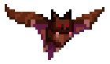
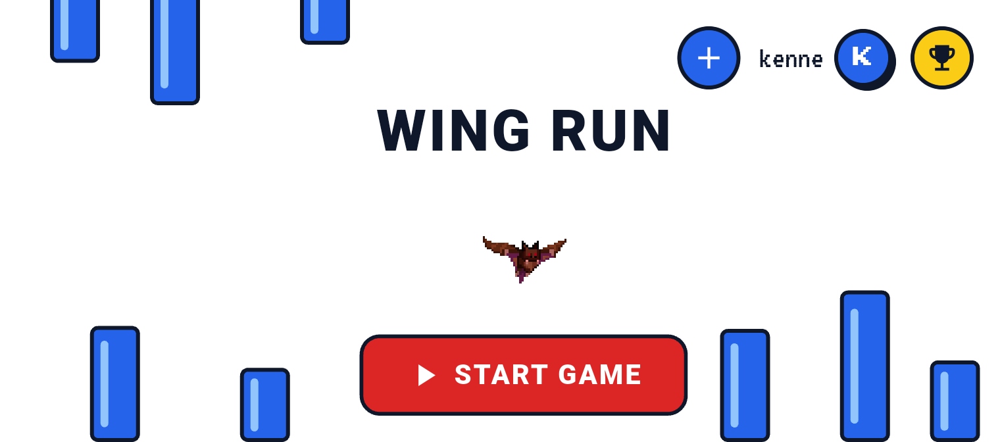

Fly up or down
Steer the bat up or down to line up with the next gap.

Wing RunA mobile game for Android
Wing Run is a pixel art game where you guide a bat up and down to slip between blocks. How far can you go?
Available on Android only.

Steer the bat up or down to line up with the next gap.
Blue blocks keep coming. One touch and the run is over.
Every run counts. Come back and climb the leaderboard.
A hand-drawn pixel bat in a bold blue and red look.
Add a player and keep each person's scores apart.
See who flew the farthest on your device.
Results are stored on your phone with SQLite.
Download Wing Run on your Android phone and start your first flight.
Android only. Source code on GitHub.